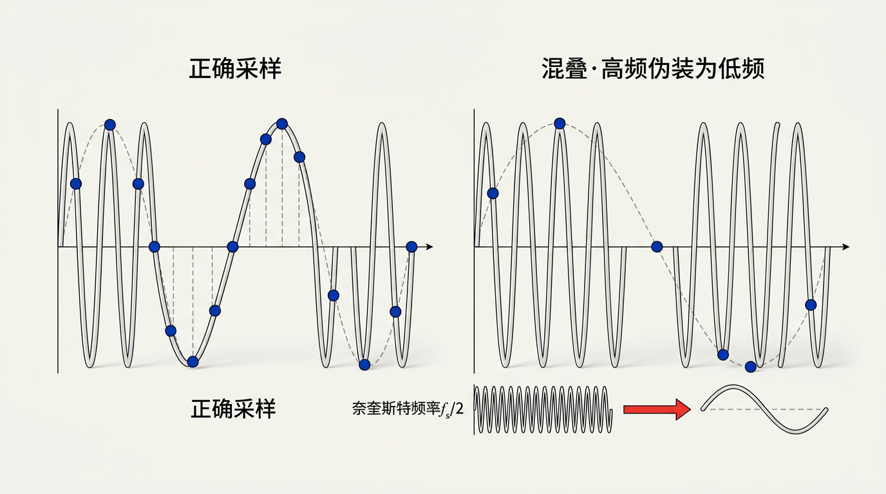
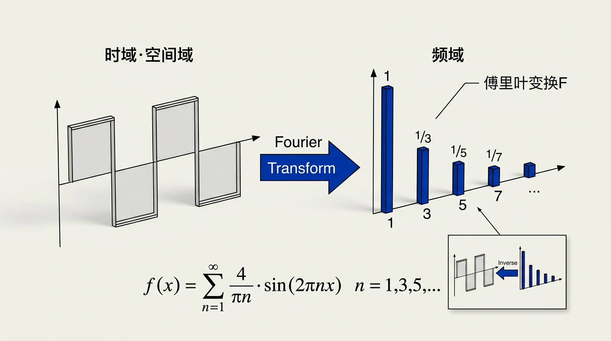

本讲义基于 Steve Marschner & Peter Shirley 所著《虎书》（Fundamentals of Computer Graphics）第5版第10章（p.222-270）信号处理。
图像和信号处理的理论基石——奈奎斯特-香农采样定理、卷积（离散/连续）、滤波器族（盒式/帐篷/高斯/Lanczos/Sinc）、傅里叶变换与混叠。理解 mipmap 的数学原理。
本版插画采用 Guizang 材质插画风格重新绘制。

在图形学中，我们经常处理连续变量的函数：图像是你们已经见过的第一个例子，但你们在继续探索图形学的过程中将会遇到更多。这些连续函数从本质上不能被直接表示在计算机中；我们必须以某种方式用有限数量的位来表示它们。表示连续函数的最有用的方法之一是使用该函数的样本（samples）：在众多不同的点上存储函数值，并在需要时重建这些点之间的值。
你们现在应该已经很熟悉使用二维像素网格来表示图像的想法——因此你们实际上已经见过一种采样表示（sampled representation）了！想想数码相机拍摄的图像：相机镜头形成的场景实际图像是图像平面上位置的连续函数，而相机将该函数转换为一个二维样本网格。从数学上讲，相机将一个类型为 R² → C 的函数（其中 C 是颜色的集合）转换为一个二维颜色样本数组，即一个类型为 Z² → C 的函数。
采样表示的另一个例子是二维数字化平板，例如平板电脑的屏幕或艺术家使用的独立数位板。在这种情况下，原始函数是触笔的运动——这是一个随时间变化的二维位置，或者说是类型为 R → R² 的函数。数字化仪在许多时间点上测量触笔的位置，产生一个二维坐标序列，或者说类型为 Z → R² 的函数。运动捕捉系统对附着在演员身体上的特殊标记做着完全相同的事情：它随时间获取标记的三维位置（R → R³），并将其变成一系列瞬时位置测量值（Z → R³）。
在维度上进一步，用于非侵入性地检查人体内部的医学 CT 扫描仪测量密度作为人体内部位置的函数。扫描仪的输出是一个三维密度值网格：它将人体的密度（R³ → R）转换为一个三维实数数组（Z³ → R）。
这些例子看起来各不相同，但实际上它们都可以使用完全相同的数学来处理。在所有情况下，一个函数在一个或多个维度上的格点处被采样，并且在所有情况下，我们需要能够从样本数组中重建出原始的连续函数。
从二维图像的例子来看，可能看起来像素就足够了，在相机将图像离散化之后我们就不再需要考虑连续函数了。但如果我们想在屏幕上使图像变得更大或更小——特别是以非整数倍缩放时呢？事实证明，最简单的方法执行得很差，会产生称为混叠（aliasing）的明显的视觉伪影。解释为什么混叠会发生以及理解如何防止它，需要采样理论的数学知识。所产生的算法相当简单，但它们背后的推理以及使它们表现良好的细节可能很微妙。
在计算机中表示连续函数当然不是图形学独有的；采样和重建的想法也不是唯一的。采样表示被广泛应用于从数字音频到计算物理的应用中，而图形学只是相关算法和数学的一个（绝不是第一个）用户。自 20 世纪 20 年代以来，通信领域就已经知道了如何进行采样和重建的基本事实，并在 20 世纪 40 年代以前以我们使用的确切形式被陈述（Shannon & Weaver, 1964）。
本章首先使用数字音频这一具体的一维例子来总结采样和重建。然后，我们继续介绍在一维和二维中支撑采样和重建的基本数学和算法。最后，我们深入探讨频率域视角的细节，该视角对这些算法的行为提供了许多洞见。
尽管采样表示在电信领域已经使用了多年，但 1982 年紧凑光盘（CD）的引入——在此前十年中音频数字录音的使用日益增加之后——是采样技术的第一个高度可见的消费级应用。
在录音时，麦克风将空气中存在的气压转换为电压。该电压信号在整个录音过程中的变化就是连续函数。因此，我们需要一个将该连续函数映射到可以存储在计算机中的有限个位序列的方法。该过程涉及两个步骤：采样（sampling）和量化（quantization）。
采样是读取函数在均匀间隔时间点上的值的过程。在 CD 音频中，采样率为每秒 44,100 个样本（44.1 kHz）。对于电话，常见的采样率为 8 kHz。采样率决定了能够被表示的频率范围。量化是将样本值——在采样时刻的真实实数——存储为二进制数的过程。CD 音频量化到 16 位整数，提供 65,536 个离散级别。虽然量化在精度上引入了限制（有限位深度意味着样本值被舍入到最近的表示级别），但本章的重点是采样和重建——将量化视为在采样值上增加的少量噪声，在大多数情况下可以忽略。
将连续幅度离散化为有限个量化级别不可避免地引入量化误差（quantization error）。对于均匀量化器，若满量程范围为 V_max − V_min，N 位量化产生 2^N 个级别，则每个量化台阶的宽度为：
Δ = (V_max − V_min) / 2^N
量化误差 e = x_quantized − x_true 落在区间 [−Δ/2, +Δ/2] 内。如果信号幅度在量化级别之间充分随机地变化（对于复杂信号通常是成立的），量化误差可以建模为均匀分布的白噪声。该噪声的方差为：
σ²_e = ∫_{-Δ/2}^{Δ/2} e² · (1/Δ) d e = Δ² / 12
对于满量程正弦波（幅度 = V_max−V_min，RMS 值 = (V_max−V_min)/(2√2)），信号功率为 (V_max−V_min)²/8。因此，信噪比（Signal-to-Noise Ratio，SNR）以分贝（dB）表示为：
SNR = 10 · log₁₀(信号功率 / 噪声功率)
= 10 · log₁₀( ((V_max−V_min)²/8) / (Δ²/12) )
= 10 · log₁₀( (2^{2N}·12) / 8 )
= 20·N · log₁₀(2) + 10·log₁₀(12/8)
≈ 6.02·N + 1.76 dB
这个著名的公式 SNR ≈ 6.02N + 1.76 dB 告诉我们：每增加 1 位量化精度，信噪比提高约 6 dB。CD 音频（N=16）的 SNR 约为 98 dB——远超模拟磁带的 ~60 dB 动态范围。这也是为什么从 8 位图像（256 色）升级到 16 位图像（65,536 色）对画质提升如此显著——量化噪声-6dB/位地减少。
为什么采样率限制了可表示的最高频率？从频域角度，答案清晰而优美。设连续信号 f(t) 的傅里叶变换为 f̂(ω)。采样操作等价于将 f(t) 乘以一个周期为 T 的冲激串（Dirac comb）：
f_sampled(t) = f(t) · Σ_{n=−∞}^{∞} δ(t − nT)
根据卷积定理，时域相乘等价于频域卷积：
f̂_sampled(ω) = f̂(ω) ★ (1/T) Σ_{k=−∞}^{∞} δ(ω − k/T)
冲激串的傅里叶变换仍然是冲激串（频率间隔为 f_s = 1/T），因此采样结果的频谱是原始频谱的无限副本，以采样频率 f_s 的整数倍为间距排列：
f̂_sampled(ω) = (1/T) Σ_{k=−∞}^{∞} f̂(ω − k·f_s)
这是整个采样理论的核心方程。它揭示了：采样 = 频谱的周期延拓。原始频谱的副本以 ±f_s, ±2f_s, ±3f_s… 为中心散布开来。
现在关键问题出现了：如果原始信号包含高于 f_s/2 的频率，相邻的频谱副本就会重叠。高频的"尾巴"侵入低频区域，与原始低频成分混合在一起——这就是混叠。一旦重叠发生，我们就无法用任何滤波器将它们分离。为了防止混叠，原始频谱的带宽必须被限制在 f_s/2 以内——即奈奎斯特条件。
CD 选择 44.1 kHz 的采样率正是因为人类听觉的上限约为 20 kHz：44.1k > 2×20k = 40k，为抗混叠滤波器留出了 ~2 kHz 的过渡带。电话语音使用 8 kHz 采样率则是因为语音的主要频率成分集中在 300–3400 Hz，奈奎斯特频率 4 kHz 足够覆盖。
如果信号恰好包含一个频率等于 f_s/2 的正弦波 sin(2π·(f_s/2)·t)，奈奎斯特极限情况。在所有采样时刻 t = nT = n/f_s，有 sin(2π·(f_s/2)·n/f_s) = sin(πn) = 0——这个正弦波在每一个采样点都取值为 0！采样结果是一个全零序列，而一个相同频率的余弦波 cos(2π·(f_s/2)·t) 虽然采样值不为零，但也与值全部为零无法区分。换句话说，在恰等于奈奎斯特频率处，信号的幅度和相位信息完全丢失。因此定理要求 f_s > 2f_max（严格大于），而不仅仅是 ≥。这个"严格大于"的条件防止了恰好位于边界上的频率分量产生不可分辨的退行情况。
混叠远不止是图形学中的锯齿——它在我们周围随处可见：
• LED 广告屏闪烁：手机拍摄 LED 大屏时，屏幕刷新率（如 60 Hz）与摄像机快门采样率不同步，导致画面中出现滚动的暗带或闪烁。
• 直升机旋翼"静止"：摄像机帧率与旋翼转速成整数比时，旋翼在每帧画面中恰好转动整数圈，看起来完全静止——这是最典型的时域混叠。
• 水龙头下的水流：在某些频率的闪烁灯光（如荧光灯的 100 Hz 频闪）下，连续的水流看起来像是分离的水滴——因为灯光的"采样"频率与水流的下落频率产生了混叠。
• 音频中的"金属音"：老式电话由于 8 kHz 采样率，当说话人的声音包含高于 4 kHz 的齿音（sibilance）时，这些高频会在 4 kHz 以下"折叠"，产生刺耳的金属质感。
想象你在看一部每秒 24 帧（24 fps）的西部电影——这是一个以 24 Hz 对现实世界进行采样的过程。当一辆马车缓缓驶过，车轮每帧只转动几度，你感知到了连续的运动。但当马车加速、车轮转速超过每秒 12 转时（奈奎斯特频率 = 24/2 = 12 Hz），奇怪的事情发生了：车轮看起来在倒转。这是因为采样频率不再足以唯一地确定旋转方向——顺时针旋转 11 次/秒和逆时针旋转 13 次/秒在 24 fps 的采样下产生完全相同的图像序列。这就是混叠的时域等价形式：高频（快速旋转）"冒充"为低频（慢速甚至反向旋转）。CD 音频的 44.1 kHz 采样率正是为了防止类似的现象发生在声音中——确保所有人类可听见的频率（最高 ~20 kHz）都能被正确捕获，不会在耳朵里"倒转"。
一旦信号以固定的速率被采样，高于采样频率一半的频率——即奈奎斯特频率（Nyquist frequency）——会与低于该阈值的频率无法区分。例如，一个以 44.1 kHz 采样的 30 kHz 正弦波会产生与一个 14.1 kHz 正弦波完全相同的样本序列。这种高频"伪装"为较低频率的现象正是混叠。在图像中，混叠通常表现为莫尔条纹，这些莫尔条纹是由采样网格与图像中的规则特征（例如百叶窗）相互作用产生的。
合成图像中混叠的另一个例子是仅用黑白像素渲染的直线上的熟悉的阶梯状走样（stair-stepping）。这是小尺度特征（线条的锐利边缘）在另一个尺度上产生伪影（对于低斜率的线条，阶梯非常长）的一个例子。
采样和重建的基本问题可以简单地基于特征太小或太大来理解，但一些更定量的问题更难回答：多高的采样率足以确保良好的结果？什么样的滤波器适合采样和重建？需要多大程度的平滑来避免混叠？对这些问题的可靠回答需要等到我们在第 10.5 节中充分发展理论之后。
在我们讨论采样和重建的算法之前，我们将首先审视它们所基于的数学概念——卷积（convolution）。卷积是一个简单的数学概念，它支撑着采样、滤波和重建所用的算法。它也是我们将在本章中分析这些算法的基础。
卷积是对函数的操作：它接受两个函数，将它们结合起来产生一个新函数。在本书中，卷积运算符用一个星号表示：将卷积应用于函数 f 和 g 的结果是 f ★ g。我们称 f 与 g 卷在一起，而 f ★ g 是 f 和 g 的卷积。
卷积既可以应用于连续函数（定义在任何实数参数 x 上的函数 f(x)），也可以应用于离散序列（仅定义在整数参数 i 上的函数 a[i]）。它也可以应用于定义在一维、二维或更高维域上的函数（即，有一个、两个或更多参数的函数）。我们将首先以离散的一维情况开始，然后继续到连续函数以及二维和三维函数。为方便定义，我们通常假设函数的定义域永远延伸下去，尽管当然在实践中它们必须在某处停止，我们必须以特殊方式处理端点。
两个离散序列 a[i] 和 b[i] 的离散卷积定义如下：
(a ★ b)[i] = Σ_{j} a[j] · b[i − j]
直觉上，这个公式将滤波器 b 沿信号 a 滑动，在每个位置计算对应输入样本的加权和。注意 b 被翻转（用 −j），然后平移（通过 +i）。这个翻转是卷积定义中的关键细节——没有它，卷积将不具备交换性。在实现中，通常通过直接索引 a[i−j] 来避免显式翻转，这在效果上等同于同样的计算。
理解离散卷积最直观的方式是将其想象为一个滑动窗口过程。假想你有两排数字：上面一排是你的信号 a = [a₀, a₁, a₂, a₃, …]，下面一排是你的滤波器 b = [b₋₂, b₋₁, b₀, b₁, b₂]（一个以 0 为中心、半径为 2 的滤波器）。计算卷积输出位置 i 的值时：
1. 翻转：将滤波器 b 关于原点镜像翻转——b[k] 变成 b[−k]。所以原来的 b₋₂ 现在出现在 +2 位置，原来的 b₂ 现在出现在 −2 位置。
2. 平移：将翻转后的滤波器向右移动 i 步，使其中心（原本在 0）对齐位置 i。
3. 逐点相乘求和：在每个索引 j 处，取 a[j] 与移动后滤波器在该位置的权重相乘，将所有乘积相加。
例如计算 (a★b)[3]：翻转后的滤波器中心对齐 i=3，所以滤波器覆盖 a 在索引 3−(−2)=5 到 3−2=1（注意翻转后的方向）处的值。具体地：(a★b)[3] = a[5]·b[−2] + a[4]·b[−1] + a[3]·b[0] + a[2]·b[1] + a[1]·b[2]。
滤波器 b 的"形状"决定了每个邻域像素的"影响力"：如果 b 是一个中心权重高的钟形曲线，输出就更接近输入信号在该点本身的值（轻度平滑）；如果 b 是均匀的，输出就是邻域的简单算术平均（强模糊）。
你可以定义一个运算符 (a ⊗ b)[i] = Σ_j a[j]·b[i+j]（不翻转），它在数学上也合法，甚至在某些实现中更直观。但如果你这样做，你会发现它不满足交换律——a ⊗ b ≠ b ⊗ a（除非其中一个序列是偶函数）。更严重的是，它不满足结合律——(a ⊗ b) ⊗ c ≠ a ⊗ (b ⊗ c)。
这两种代数性质的丧失意味着你无法将滤波器"串联"——先用滤波器 A 处理再用滤波器 B 处理，不等价于用 (A⊗B) 一次性处理。而真正的卷积可以：先用高斯模糊再用盒式平滑 ≡ 用（高斯★盒式）结果一次性卷积。这个性质对于构建复杂的信号处理管道是至关重要的——它是为什么我们可以先做可分离滤波（10.3.6节）、图像金字塔（10.4.2节）等优化操作的理论基础。
因此，定义中的那个看似多余的负号，实际上是让卷积成为一个具有良好代数结构的运算——交换、结合、分配——的关键。
卷积是交换的（commutative）：f ★ g = g ★ f，结合的（associative）：(f ★ g) ★ h = f ★ (g ★ h)，并且是分配的（distributive）：f ★ (g + h) = f ★ g + f ★ h。这些性质使得通过依次应用更简单的滤波器来构建复杂的滤波操作成为可能。
在图形学应用中，一个序列 a 通常代表信号（例如，音频样本或图像像素行），而另一个序列 b 通常代表滤波器。a ★ b 的结果是一个新序列，其中每个元素都是 a 在 b 形状影响下的邻域的加权平均。滤波器的形状决定了滤波的效果：宽而平坦的 b 产生模糊（平滑），而具有正中心和负侧瓣的 b 产生锐化。
两个连续函数 f(x) 和 g(x) 的连续卷积定义为：
(f ★ g)(x) = ∫_{-∞}^{∞} f(t) · g(x − t) dt
这在概念上与离散情况相同——将 g 沿 f 滑动并计算乘积的积分。
在采样和重建中最常用的卷积形式是离散-连续卷积（discrete-continuous convolution）。这种情况下，一个函数是离散序列 a[i]（例如样本值），另一个是连续函数 f(x)（例如重建滤波器）。其结果是一个连续函数 (a ★ f)(x)：
(a ★ f)(x) = Σ_{i} a[i] · f(x − i)
这个公式是将离散的样本重建为连续的信号的数学基础。对每个样本值 a[i]，我们放置一份滤波器的缩放副本——位于 x = i 处、高度缩放为 a[i] 的 f(x − i)。所有这些副本在每一处相加得出重建后的连续函数。滤波器 f 的形状直接决定了重建信号的外观：如果 f 是盒式函数，重建将是分段常数（最近邻）；如果 f 是帐篷函数，重建将是分段线性（线性插值）。
| 卷积类型 | 输入类型 | 输出类型 | 定义 | 典型应用 |
|---|---|---|---|---|
| 离散-离散 | Z → R, Z → R | Z → R | Σ_j a[j]b[i−j] | 图像模糊、边缘检测、数字滤波器 |
| 连续-连续 | R → R, R → R | R → R | ∫ f(t)g(x−t) dt | 理论分析、光学系统建模 |
| 离散-连续 | Z → R, R → R | R → R | Σ_i a[i]f(x−i) | 采样重建、纹理映射、图像缩放 |
图形学中，离散-离散卷积用于处理已经是数字化的图像数据；离散-连续卷积是重建的核心——每个样本贡献一个以自身为中心的滤波器"斑点"，所有斑点的叠加就是重建的连续信号。
想象你正在用手冲咖啡。磨碎的咖啡粉铺在滤纸上，热水从上方缓缓注入。每一滴水穿过咖啡粉层时，都会带走一部分咖啡风味物质——这个过程就是卷积。
在这个类比中：热水注入 = 输入信号 a[i]（随时间变化的注水速率），咖啡粉层的分布 = 滤波器 b[i]（不同位置的粉层厚度决定了"权重"），滴落到壶中的咖啡液 = 输出 (a★b)[i]（每一时刻的咖啡浓度）。
翻转和滑动的几何含义：如果注水位置从左向右移动（对应滤波器滑动），滤纸"下方"（对应翻转）对应位置的咖啡粉首先被浸润——翻转保证了注水顺序与出液顺序的因果对齐。如果你用粗研磨（宽滤波器），咖啡出得慢且味道淡（强模糊）。用细研磨（窄滤波器），咖啡浓郁但有明显的细粉味（保留细节但可能产生"振铃"——苦涩）。
卷积的交换性在这个类比中的含义：用固定水流注过变化的粉层 = 用变化的水流过固定的粉层——结果相同。结合性的含义：先用粗滤再用细滤 = 一次性用（粗滤★细滤）过滤——效果等价。
现在我们已经掌握了卷积的工具，让我们来看看图形学中常用的一些特定滤波器。
下面每个滤波器都有一个自然半径（natural radius），当样本间隔为一个单位时，这是在采样或重建中使用的默认大小。本节中的滤波器定义在此自然大小上。我们还规定每个滤波器的积分为 1：∫_{-∞}^{∞} f(x) dx = 1，这是在采样和重建中不改变信号平均值所必需的。
正如我们将在第 10.4.3 节中看到的，某些应用需要不同大小的滤波器，这可以通过缩放基本滤波器来获得。对于滤波器 f(x)，我们可以定义一个尺度为 s 的版本：f_s(x) = f(x/s) / s。该滤波器在水平方向上被拉伸 s 倍，然后在垂直方向上被压缩 1/s 倍，以保持其面积不变。一个自然半径为 r 的滤波器以尺度 s 使用时具有支持半径 s·r。
盒式滤波器（box filter）是一个积分等于 1 的分段常数函数。作为离散滤波器，它可以写为：
a_box,r[i] = 1/(2r+1) 对于 |i| ≤ r，否则为 0
注意为了对称性，我们包含两个端点。作为连续滤波器，我们写为：
f_box,r(x) = 1/(2r) 对于 −r ≤ x < r，否则为 0
在这种情况下，我们排除一个端点，这使得半径 0.5 的盒式滤波器可以作为重建滤波器使用。正是由于盒式滤波器是不连续的，这些细微的差别才显得重要。盒式滤波器是最简单的低通滤波器，对应于最近邻采样或重建。它在频域中是一个 sinc 函数——衰减缓慢，允许大量高频泄漏通过。
盒式函数 rect(x) 的傅里叶变换是 sinc(u) = sin(πu)/(πu)。sinc 函数在 u = 0 处取峰值 1，然后以 1/|u| 的速率缓慢衰减，在整数频率处过零。这个缓慢的衰减意味着：
• 大量高频分量被衰减但并未消除——它们以逐渐减小的幅度"泄漏"通过滤波器。
• sinc 的第一个旁瓣（sidelobe）高度约为峰值的 22%（−13 dB），在图像处理中这会产生不容忽视的振铃。
• 只有在频率恰好为整数的位置，衰减才是完全的——这意味着盒式滤波器只在这些特定频率处有零点。
盒式滤波器空间域的紧凑性（只在有限区间非零）与频域的缓慢衰减（sinc 的尾巴）是一对矛盾——这就是我们都听过的不确定性原理在信号处理中的体现：函数不可能同时在空间域和频域都紧支撑。
帐篷滤波器（tent filter），也称为三角形滤波器（triangle filter）或线性滤波器（linear filter），是一个分段的线性连续函数，权重从中心线性下降到边缘。其连续形式为 f_tent(x) = max(0, 1 − |x|)。在二维中，它产生双线性插值。帐篷滤波器是 C⁰ 的（连续但有尖锐的角），并提供比盒式滤波器更陡的频率滚降，更好地衰减高频伪影。帐篷滤波器的傅里叶变换是 sinc²——旁瓣衰减为 ~1/u²，比盒式的 ~1/u 快得多，因此振铃明显减轻。
高斯滤波器（Gaussian filter）由高斯（正态）分布定义：
g(x) = (1/√(2πσ²)) · exp(−x²/(2σ²))
高斯滤波器在傅里叶变换下具有特殊性质：一个高斯函数的傅里叶变换是另一个高斯函数。这意味着高斯滤波器在空间域和频域中都指数地平滑衰减——没有波纹、没有旁瓣、没有陡峭的过渡。这种频率响应的指数衰减使得高斯滤波器成为一个优秀的采样滤波器（sampling filter），即使对于困难的情况也是如此——例如当需要从输入信号中移除高频图案时，它的傅里叶变换会指数衰减，不会有让混叠泄漏通过的凸起。
高斯滤波器的另一个关键优势是可分离性（separability）：二维高斯滤波器是 XY 可分离的——G_2D(x,y) = G_1D(x) · G_1D(y)——这允许以两个一维通道而不是一个昂贵的二维卷积来实现，将复杂度从 O(r²) 降低到 O(2r)。
高斯滤波器拥有其他所有滤波器都羡慕的优雅属性组合：
1. 时频对称性：高斯是唯一在傅里叶变换下形状不变的函数——更窄的高斯变换为更宽的高斯（反之亦然）。这意味着你不需要在"空间域好"和"频域好"之间做痛苦的选择——它的行为在两个域中同等可控。
2. 无振铃：高斯没有负值旁瓣，没有振荡——在边缘附近不会产生 overshoot/undershoot。这在图像处理中至关重要：你在高对比度边缘附近不会看到讨厌的"光环"伪影。
3. 指数衰减：旁瓣在频域和空间域都以 e^(−u²) 的速率衰减——比任何多项式衰减（如 sinc 的 1/u、sinc² 的 1/u²）都要快得多。这意味着即使需要强烈模糊，高频也不会"泄漏"产生混叠。
4. 可分离性：2D 高斯 = 1D 高斯 × 1D 高斯，使得高效实现成为可能。
代价是什么？高斯在频域不是一个"锐利的截止"——它平滑地衰减所有频率，包括那些本应从采样中排除的信号分量。但没有一种滤波器能同时具有完美的锐利截止和零振铃（这是不确定性原理的又一个体现），而高斯在这个权衡中取得了最优雅的平衡点。
B 样条滤波器（B-spline filter）是通过将盒式滤波器与自身卷积构建的。B 样条具有多阶：一阶 B 样条是盒式函数；二阶 B 样条是帐篷函数（盒式与自身的卷积）。三阶 B 样条（对帐篷的盒子卷积——等价于四个盒式函数的卷积）是一个具有连续一阶和二阶导数（C²）的分段三次函数。高阶 B 样条是通过进一步卷积构建的，具有越来越高的连续性。B 样条滤波器非常平滑，对混叠频谱的控制非常有效。它也会平滑基础频谱——这是平滑与混叠之间的经典权衡。在实践中，B 样条广泛应用于图像处理和重建中，因为它在保持合理锐度的同时提供了出色的平滑性。
理论上，B 样条的阶数可以无限提高——四次、五次、十次……每次增加一阶，多一次连续的导数，多平滑一分。但实际中几乎没人用到超过三次。原因：
1. 支撑区间膨胀：k 阶 B 样条的支撑区间为 [−k/2, k/2]（半径随阶数线性增长）。三次 B 样条（k=4）半径已达 2 个样本间距，5 阶 B 样条半径 2.5——更大的支撑区间意味着更多的计算和更多的边缘像素损失。
2. 回报递减：从 C⁰（帐篷）到 C²（三次 B 样条），视觉改善明显——尖锐角消失、振铃大幅减少。但从 C² 到 C⁴……视觉差异已经难以察觉（人眼对二阶导数的连续性不敏感）。
3. 过度模糊：随着阶数提高，B 样条在频域等价于 sinc^(k+1)——衰减越来越快，但主瓣也越来越窄——信号的低频分量也受到越来越强的衰减。最终效果是重建图像变得越来越模糊。
因此，三次 B 样条位于"平滑振铃"和"保持锐度"之间的甜点。这就是为什么它成为了图形学重建滤波器的黄金标准，而 Mitchell-Netravali 滤波器（两个三次 B 样条的加权混合）通过引入可控量的锐化补偿来进一步微调这个平衡。
sinc 滤波器（sinc filter）是 sinc(x) = sin(πx)/(πx)。它在频域中是一个完美的盒式函数——允许所有低于截止频率的频率通过，完全阻挡高于截止频率的所有频率。根据频率域标准，sinc 滤波器是理想的低通滤波器。然而，sinc 滤波器在实践中并没有被普遍使用，因为它不切实际，并且尽管它在频率域中是最优的，但它在许多应用中不会产生最好的结果。对于采样，sinc 函数的无限范围和它从中心向外相对缓慢的衰减率是一个不利因素。对于重建，sinc 的大小再次产生问题，但更重要的是，众多的波纹会在重建信号中产生"振铃"伪影。
sinc 滤波器的振铃伪影有一个深层的数学根源——吉布斯现象（Gibbs phenomenon）。当一个信号在空间域被一个完美的频域"矩形窗"（sinc 的理想频域盒式函数）截断时，重建信号在空间域的不连续点附近会产生约 9% 的超调（overshoot）。
具体来说：如果你用 Sinc 滤波器重建一个阶跃信号（从 0 一步跳到 1），重建结果在跳跃点附近不是干净的、陡峭的过渡——它在跳跃之前振荡到约 −0.09（undershoot），在跳跃之后振荡到约 1.09（overshoot），然后以递减幅度来回振荡。这些额外的振荡就是"振铃"。
吉布斯现象的本质原因：频域中的理想矩形窗是不连续的（在截止频率处从 1 跳变到 0），这种不连续性在时域中对应着 sinc 函数的缓慢衰减的振荡尾巴——1/x 级的衰减。无论你取多宽的 Sinc 核（即使理论上取无穷宽），峰值超调的幅度永远不会降到 ~9% 以下——增加核宽度只会使振荡更紧凑，但不会消除它们。
吉布斯现象的关键启示：频域的完美截止 = 时域的持久振荡。因此，实际滤波器（高斯、B 样条、Lanczos）都采用了某种形式的"柔和截止"——允许过渡带、牺牲一定的频率锐度，换取空间域的干净行为。
想象你在一个平静的池塘中突然垂直投入一块石子——水面瞬间出现了尖锐的凹陷（类似阶跃信号）。你期望只看到一个洞，但实际发生了什么？水波从投入点向四周扩散——一圈、两圈、三圈……波纹以递减的幅度向外传播。这就是池水对"阶跃输入"的自然响应，也是吉布斯现象的完美物理类比。
Sinc 滤波器的振铃就像这些水波。当你用 Sinc 重建一个锐利边缘时，边缘两侧会泛起数学的"涟漪"——在图像中表现为明暗交替的条纹。如果你投入的是一块海绵（高斯滤波器）而非石子，水面不会有涟漪——只有平滑的凹陷。这就是为什么高斯滤波器不会产生振铃：它在频域是"软"的、平滑的过渡，而不是像 Sinc 那样"硬"截止。
实际上，所有实际可实现的滤波器都面临这种权衡：你想让滤波器在频域"硬"到什么程度（更好的频率选择性），就意味着在空间域会有多"震"的涟漪。
到目前为止，我们只讨论了用于一维卷积的滤波器，但对于图像和其他多维信号，我们同样需要滤波器。一般来说，任何二维函数都可以是一个二维滤波器，偶尔以这种方式定义它们是有用的。但在绝大多数情况下，我们可以从已经见过的一维滤波器构建合适的二维（或更高维）滤波器。
这样做的最有用的方式是使用可分离滤波器（separable filter）。可分离滤波器 f₂(x,y) 在特定 x 和 y 处的值简单地是一维滤波器 f₁ 在 x 和 y 处的值的乘积：f₂(x,y) = f₁(x) · f₁(y)。类似地，对于离散滤波器：b₂[i,j] = b₁[i] · b₁[j]。水平或垂直穿过 f₂ 的任意切片都是 f₁ 的缩放副本。f₂ 的积分是 f₁ 的积分的平方——因此如果 f₁ 是归一化的，那么 f₂ 也是归一化的。
可分离性是一个极其重要的属性，因为它将二维卷积的计算复杂度从关于滤波器半径的 O(r²) 降低到 O(2r)。在实践中，几乎所有常用的二维图像滤波器（高斯、盒式、帐篷、B 样条）都是可分离的，这就是为什么它们在现代图形应用中被广泛采用。
用不可分离的二维滤波器处理一幅 n×n 图像，对于每个输出像素，需要对半径 r 内的 (2r+1)×(2r+1) ≈ 4r² 个输入像素进行加权求和。对于全部 n² 个输出像素，总操作数为：
c_2D = n² · (2r+1)² ≈ 4 n² r² 操作（乘加）
现在考虑可分离滤波器的情况。一个可分离的二维滤波器 b₂[i,j] = b₁[i]·b₁[j] 的卷积可以分解为两次一维卷积：
(I ★ b₂)[x,y] = Σ_i Σ_j I[i,j] · b₁[x−i] · b₁[y−j]
= Σ_i b₁[x−i] · ( Σ_j I[i,j] · b₁[y−j] )
= Σ_i b₁[x−i] · I_temp[i]
首先对每一行进行一维卷积（水平方向）：产生 n×n 的中间图像 I_temp，每行 n·(2r+1) 操作。然后对每一列进行一维卷积（垂直方向）：产生最终的 n×n 输出，每列 n·(2r+1) 操作。总操作数为：
c_separable = n² · (2r+1) + n² · (2r+1) = 2 n² · (2r+1) ≈ 4 n² r 操作
对比：
c_2D / c_separable = (4 n² r²) / (4 n² r) = r
可分离滤波器的加速倍数是半径 r。对于 r=5（常见的 11×11 高斯核），加速 5 倍。对于 r=20（较大的模糊核），加速 20 倍。图像越大，节省的绝对计算量越显著：一个 r=10 的滤波器在 1024×1024 图像上，不可分离需要约 400M 次乘加，可分离仅需约 40M 次——差了一个数量级。
这一分解也极大地改善了内存访问模式：一维权重的顺序遍历更好地利用了现代 CPU 的缓存层次结构，而二维的跳跃式访问则在每次像素步进时跨越数行内存，触发大量缓存未命中。
不是所有二维滤波器都可分离。f₂(x,y) = f₁(x)·f₁(y) 这个条件非常严格——它要求二维函数在 XY 两个方向上的变化是完全独立的。
可分离的二维滤波器具有一个关键特征：它的所有等值线都是轴对齐的矩形（或接近矩形的形状）。一个旋转了 45° 的高斯核（协方差矩阵非对角）就不可分离——因为它的轮廓是倾斜的椭圆，不能分解为 X 和 Y 两部分的乘积。类似地，一个圆形对称但非高斯的滤波器（如径向盒式滤波器——中心为一个圆盘的均匀值）也是不可分离的。
常见的可分离滤波器：高斯（可分离于任意正交基下）、盒式、帐篷、B 样条、Lanczos（沿轴）。
不可分离的例子：旋转高斯（需要旋转变换后才可分离）、方向性模糊（如运动模糊——仅沿一个特定方向）、各向异性扩散滤波器。
对于不可分离的滤波器，要么放弃可分离性优化（接受 O(r²) 代价），要么通过奇异值分解（SVD）近似为多个可分离通道的加权和——这是矩阵分解技术在图像处理中的一个重要应用。
现在我们已经建立了滤波和卷积的机制，我们可以回到图像处理的原始动机。所有的滤波器——盒式、帐篷、高斯、B 样条——在应用到二维图像时具有直观的意义：盒式滤波器产生块状重建（最近邻）；帐篷滤波器产生线性插值；高斯滤波器产生无振铃的平滑；B 样条产生高质量的平滑。
使用离散滤波器对图像进行滤波的最简单方法是简单地对每个像素处的滤波器邻域内的所有像素求和，以该像素作为加权和的中心。对于离散滤波器 b，该算法为：
function filterImage(image I, filter b)
r = b.radius
nx = I.width; ny = I.height
allocate storage array S[0 ... nx−1]
allocate image Iout[r ... nx−r−1, r ... ny−r−1]
for y = r to ny−r−1 do
for x = 0 to nx−1 do
S[x] = 0
for k = −r to r do
S[x] = S[x] + b[k]·I[x, y−k]
for x = r to nx−r−1 do
Iout[x,y] = 0
for k = −r to r do
Iout[x,y] = Iout[x,y] + b[k]·S[x−k]
这个两遍实现利用了可分离性：首先在每一行上执行一维卷积（水平方向），将结果存储在中间存储中；然后在每一列上执行一维卷积（垂直方向）。输出图像 Iout 在所有边上缩小了 r 个像素——这是滤波操作的自然结果，因为在靠近图像边缘的地方没有足够的像素来填充滤波器。处理边界有多种策略：将图像视为环绕（周期性扩展）、复制边缘像素（钳位）、或者将输出图像缩小并仅使用有效像素。
当图像需要被缩小（降采样）时，像素间隔增大——有效采样率降低。如果原始图像包含高于新奈奎斯特频率的空间频率（例如锐利边缘、细线、噪声纹理），这些频率将混叠为锯齿、莫尔条纹和闪烁伪影。解决方案是：在降采样之前应用低通滤波器——模糊图像以去除那些高于新奈奎斯特限制的频率。
一种常用的图像抗混叠方法是创建一个图像金字塔（image pyramid）——一系列逐渐缩小并滤波的图像。每一层通过用低通滤波器（通常是高斯滤波器）对原始图像进行滤波并将结果缩小 2 倍来构建。这个过程构建了第 11 章中讨论的mipmap的基础——纹理的预滤波层次结构，使得渲染时可以高效地进行抗混叠纹理查找。
Mipmap（来自拉丁语 "multum in parvo"——"小空间里包含很多"）的核心思想是用空间换时间：预先计算纹理的降采样版本，使得在渲染时可以直接选择合适的尺度进行采样——避免了实时滤波的高昂计算代价。
从信号处理的角度看，mipmap 的每一级都应用了不同截止频率的低通滤波器。原始纹理（Level 0）包含全分辨率下的所有频率分量。Level 1（缩小 2 倍）的奈奎斯特频率是 Level 0 的一半——任何 Level 0 中高于 f_nyq/2 的频率都必须被滤除。Level 2 再缩小 2 倍，奈奎斯特频率再减半，依此类推。
因此，构建 mipmap 的过程本质上是预滤波（prefiltering）的级联应用——每一层在降采样之前都先用低通滤波器（通常是 2×2 盒式平均，等价于盒式滤波器在 2 倍缩放下的采样核）对上一层进行滤波。从频域看，每一层都将其频谱"压缩"到更窄的带宽内，防止在高一层级的稀疏采样中产生混叠。
Mipmap 的存储开销可以通过几何级数求和来计算。对于一个 W×H 像素的纹理，mipmap 各级的像素数分别为：Level 0: WH, Level 1: WH/4, Level 2: WH/16, … 直到 1×1。总和：
WH · (1 + 1/4 + 1/16 + 1/64 + ... ) = WH · (1/(1−1/4)) = WH · (4/3)
因此 mipmap 的总存储仅比原始纹理多 1/3（约 33%）。这个 33% 的额外存储代价换来的是：在渲染时，纹理查找可以从 O(r²)（每像素需要在纹理空间滤波 r×r 个纹素）降低到 O(1)（三线性插值的 8 个纹素采样）——对于大的 r 值（如远处表面覆盖数百个纹素），加速可以超过 100 倍以上。
打开你手机上的地图 App。当你查看一个城市的全貌时（缩小），你不会看到每一条小巷的名字——地图显示的是主干道、行政区划和大面积的地标。当你放大到街道级别时（放大），小巷、建筑物编号和店铺信息才逐级出现。
这恰恰就是 mipmap 的工作原理。Level 0 就是最高的缩放级别——包含所有细节（小巷、门牌号）。Level 2 是缩小了 4 倍的视图——主干道和高亮地标。Level 5 可能只剩国家轮廓和海洋。每一级都是为特定的"观看距离"（缩放级别）预模糊的——你不会在高层级中保留那些在缩小视图中只会变成混乱噪点的细节（混叠）。
地图预渲染所有缩放级别需要多少"额外存储"？如果用正方形瓦片（2×2 合并为 1），每一级是上一级的 1/4 大小——这个级数求和同样收敛到 4/3。这就是为什么 mipmap 只需要 1/3 额外存储而非翻倍的数学原因——和地图瓦片金字塔一模一样。
从频率域的角度来看，低通滤波使频谱变窄，使得在采样后，副本重叠得更少。即使没有滤波时频谱重叠，将信号与低通滤波器进行卷积可以将频谱缩窄到足以消除重叠的程度，从而产生滤波后信号的良好采样表示。当然，我们失去了高频，但这总比让它们与信号混杂并变成伪影要好。
重建（reconstruction）是从离散样本恢复连续信号的过程。从频率域的视角来看，重建滤波器的工作是移除混叠频谱，同时尽可能少地扰动基础频谱。
在图 10.48 中，我们可以看到最粗糙的重建滤波器——盒式滤波器——确实衰减了混叠频谱。最重要的是，它完全阻挡了所有混叠频谱的 DC 尖峰。这是所有合理重建滤波器的特征：它们在频率空间中在所有采样频率的整数倍处具有零点。这等价于空间域中的无波纹性质。
因此，一个好的重建滤波器需要是一个好的低通滤波器，附加要求是完全阻挡采样频率的所有整数倍。使用不同于盒式滤波器的重建滤波器的目的是：更完全地消除混叠频谱，减少高频伪影泄漏到重建信号中，同时尽可能少地扰动基础频谱。
不同重建滤波器在频域的差异，决定了它们在图像放大/缩小中的行为：
| 滤波器 | 空间域形状 | 频域形状 | DC=1? | 零点位置 | 高频滚降 | 振铃 |
|---|---|---|---|---|---|---|
| 盒式 (Box) | rect(x) | sinc(u) | 是 | u = 1, 2, 3… | ~1/u（极慢） | 严重 |
| 帐篷 (Tent) | 1−|x| | sinc²(u) | 是 | u = 1, 2, 3… | ~1/u² | 轻微 |
| 高斯 (Gaussian) | e^{-x²/2σ²} | e^{-2π²σ²u²} | 是 | 无（无零点） | 指数衰减 | 无 |
| 三次B样条 | 分段三次 | sinc⁴(u) | 是 | u = 1, 2, 3… | ~1/u⁴ | 极少 |
| 理想 Sinc | sin(πx)/(πx) | rect(u) | 是 | 无（频域硬截止） | 完全消除(>1) | 严重 |
表中可读出清晰的规律：从盒式 → 帐篷 → 三次 B 样条，随着空间域平滑度提高（C⁻¹ → C⁰ → C²），频域旁瓣以多项式级数加速衰减（1/u → 1/u² → 1/u⁴），振铃也急剧减少。但代价是主瓣变宽——更多的低频也被衰减——这就是"平滑 vs 混叠"的经典权衡。
高斯的独特之处：它通过指数衰减同时避免了振铃和多项式级数的缓慢滚降——在效果上等价于用"柔和"代替了"锐利"。Lanczos 滤波器（sinc 与窗函数的乘积）位于两者之间——保留了 Sinc 的锐利截止，但用汉宁窗压制了远端的旁瓣。
虽然两者看起来都是"让图像变平滑"的操作，但它们的目的和数学性质截然不同：
高斯模糊：像素-像素操作（离散-离散卷积）。目的是降低噪声或创造柔焦效果。它不改变图像分辨率——输入和输出有相同数量的像素。理想的高斯模糊滤波器在 f_s 的整数倍处没有强制零点——因为它的目的不是消除混叠，而是降噪。
重建滤波器：样本-连续操作（离散-连续卷积）。目的是从稀疏的离散样本恢复连续的信号，然后可以在任意新位置进行采样（重采样）。例如将 100×100 的图像放大到 300×300——你需要"发明"出 200 个不在原始网格上的新像素值。重建滤波器必须在每一个采样频率的整数倍处具有零点——这是消除混叠频谱、恢复纯净低频分量的必要条件。
关键测试：如果你用高斯核（无零点）而不是帐篷核（有零点）重建一个纯正弦波信号，你会在重建信号中发现残留的高频振荡——因为高斯没有在每个副本中心阻挡频谱泄漏。如果信号频率恰好接近奈奎斯特频率，这个差别尤其明显。
重采样（resampling）将重建和采样组合在一起：从原始离散样本重建连续信号，然后以新的速率对其进行采样。在实现中，这两个步骤被合并为一个单一的滤波操作。重采样滤波器必须同时完成两个任务：消除原始采样引入的混叠频谱（如重建滤波器所做的那样），并且使信号频谱足够窄以便在目标采样率下进行采样（如采样滤波器所做的那样）。
线性插值（帐篷滤波器）对于放大来说快速且足够好，但对于降采样来说不够——它无法充分衰减高频，导致混叠。双三次和 Lanczos 滤波器在降采样方面表现明显更好，伪影更少，细节保留更好。
选择滤波器取决于缩放的方向和比例：
• 放大（升采样）——盒式 = 最近邻 → 块状锯齿；帐篷 = 双线性 → 轻微模糊但无振铃，对于多数 GUI 展示已经足够；双三次/Lanczos → 更清晰但边缘可能有轻微光环。对于整数倍放大且内容是像素艺术时，最近邻反而最佳。
• 小幅缩小（缩小到原来的 1/2 以上）——帐篷通常已足够，因为原始奈奎斯特频率只是略微高于新采样率。
• 大幅缩小（缩小到原来的 1/4 以下）——帐篷会严重混叠（sinc² 的旁瓣不足以衰减大幅超出的高频）。此时 Lanczos 或带预滤波的高斯是必需的。实际操作中，最佳的降采样方法是先建立 mipmap 再选择合适的层级——这等价于在缩小之前充分预滤波。
原则：缩小比例越大，预滤波需要越强——滤波器半径和核宽应与缩小比例成正比增长。
如果你只对实现感兴趣，可以到此为止；前面几节中的算法和建议足以让你编写执行采样和重建的程序并获得出色的结果。然而，采样背后存在一个更深层次的数学理论，其历史可以追溯到电信领域首次使用采样表示的时代。采样理论回答了许多难以仅通过尺度论证来推理的问题。
但最重要的是，采样理论为采样和重建的工作原理提供了宝贵的洞见。它为学习它的学生提供了一套额外的智力工具，用于推理如何以最少的代码实现最有效的代码。

傅里叶变换（Fourier transform）与卷积一起，是支撑采样理论的主要数学概念。你可以在许多分析数学书以及信号处理书中读到关于傅里叶变换的内容。
傅里叶变换背后的基本思想是：通过将各个频率的正弦波（正弦曲线）相加来表达任何函数。通过为不同频率使用适当的权重，我们可以使正弦波相加得到我们需要的任何（合理的）函数。
作为例子，图 10.41 中的方波可以通过一个正弦波序列来表达：Σ_{n=1,3,5,...}^{∞} (4/(πn)) sin(2πnx)。这个傅里叶级数以频率为 1.0 的正弦波（sin 2πx）开始——与方波的频率相同——而其余项添加越来越小的修正以减少波纹，并在极限处精确地再现方波。注意求和中的所有项都具有方波频率的整数倍频率。这是因为其他频率会产生与方波具有不同周期的结果。
一个令人惊讶的事实是：信号不必是周期性的才能以这种方式表示为正弦波之和——一个非周期信号只需要更多的正弦波。我们不再对离散的正弦波序列求和，而是对连续的正弦波族进行积分。例如，盒式函数可以通过积分表达：除了常数因子外，∫ sin(πsu)/(πsu) du。
这个公式提供了函数在频率域中的表示：对于每个频率 u，我们有该频率的幅度。傅里叶变换将一个函数表示为另一个函数——一个频率的函数。连续函数 f(x) 的傅里叶变换定义为：
F(ω) = ∫_{-∞}^{∞} f(x) · e^{−2πiωx} dx
对于实函数，傅里叶变换通常是复数，将每个频率分解为幅度和相位分量。幅度谱 |F(ω)| 告诉我们每个频率的强度有多大。
傅里叶变换的一个基本事实是它将卷积转换为乘法：F{f ★ g} = F{f} · F{g}。这个深刻的联系意味着我们可以完全在频率域中推理滤波操作：应用滤波器 g 等价于将信号的频谱乘以 g 的频谱。它也意味着在空间域中的乘法等价于频率域中的卷积（反之亦然）。
当你同时按下钢琴的 C、E、G 三个键时，空气中产生了三个频率的正弦波叠加：C4 ≈ 261.6 Hz，E4 ≈ 329.6 Hz，G4 ≈ 392.0 Hz。通过空气传播到你的耳膜上的，是这三个正弦波的叠加——一个看起来很复杂的单一波形。但你的耳朵（确切地说，是耳蜗中的基底膜）将这个复合波形分解回三个纯净的音调——它做了一次机械的傅里叶分析。
这就是傅里叶变换的精髓：任何复杂的信号都可以表示为不同频率正弦波的加权和。傅里叶变换告诉你每个频率的"音量"（幅度）有多大。在图形学中，把图像做傅里叶变换就像分析一个视觉的"和弦"——平滑的渐变 = 低频"低音"，锐利的边缘 = 高频"尖音"，规则纹理 = 特定频率的"音符"。
混叠在这个类比中的表现：如果你用很低采样率的麦克风录制钢琴和弦，C4 (261 Hz) 正常、E4 (329 Hz) 正常，但如果你加了一个 C7 (2093 Hz) 的高音，在 2000 Hz 采样率下（奈奎斯特 = 1000 Hz），2093 Hz 会混叠为 2000−2093= −93 Hz → 93 Hz 的低频杂音——就像一个高音被"折叠"成了低音，彻底干扰了和弦。这就是为什么采样前必须滤波掉超过奈奎斯特频率的声音。
在采样理论中，最重要的函数之一是Dirac 冲激（Dirac impulse）或δ 函数（delta function）。直观地说，δ(x) 是一个无穷窄、无穷高、但面积为 1 的尖峰。它在卷积中扮演着特殊角色：它是卷积的单位元——f ★ δ = f。将函数与一个冲激进行卷积仅仅是复制该函数。
Dirac δ 函数不是一个通常意义上的函数——它是数学家所说的广义函数（distribution）或测度（measure）。它通过其在积分下的行为来定义：
∫_{-∞}^{∞} δ(x) dx = 1，且对于任意连续函数 φ(x)：∫_{-∞}^{∞} δ(x) φ(x) dx = φ(0)
这两个条件抓住了 δ 函数的本质：它的"质量"集中在 x=0 的一点上，总质量为 1。直观理解——δ(x) 在 x≠0 处为零，但在 x=0 处无限大，使其积分为 1——在数学上不够严格（不存在一个普通函数同时满足"处处为零"和"积分为 1"），但在物理和工程推导中非常有帮助。
δ 函数的平移版本 δ(x−a) 满足 ∫ δ(x−a) φ(x) dx = φ(a)——它"选出"函数 φ 在 x=a 处的值。正是这个采样性质（sifting property）使得 δ 函数成为采样理论的数学基础：将信号与冲激串相乘，等价于在每一个冲激位置处选出信号的值。
一系列等间距冲激的序列——称为冲激串（impulse train）或Dirac 梳（Dirac comb）——在采样中扮演着关键角色。冲激串 s_T 定义为 s_T(x) = Σ_{i=−∞}^{∞} δ(x − iT)，它在每个整数倍的周期 T 处都有一个冲激。
冲激串的傅里叶变换也是冲激串：F{s_1} = s_1 ——在所有整数频率处有一个冲激序列。由于傅里叶变换的缩放性质，周期为 T 的冲激串的傅里叶变换是周期为 1/T 的冲激串（在空间域中使采样更精细会使冲激在频率域中更远）。
周期为 T 的冲激串 s_T(x) = Σ_{n=−∞}^{∞} δ(x − nT) 是一个周期函数（周期为 T），因此可以展开为傅里叶级数：
s_T(x) = Σ_{k=−∞}^{∞} c_k · e^{2πi kx / T}
其中傅里叶系数 c_k = (1/T) ∫_{−T/2}^{T/2} s_T(x) · e^{−2πi kx / T} dx。在积分区间 [−T/2, T/2] 内，s_T 只有 x=0 处的一个冲激（因为其他冲激在区间外），因此：
c_k = (1/T) ∫ δ(x) · e^{−2πi kx / T} dx = (1/T) · e^{0} = 1/T
所有系数都相等且为 1/T。代入傅里叶级数：
s_T(x) = (1/T) Σ_{k=−∞}^{∞} e^{2πi kx / T}
现在对两边取傅里叶变换。已知常数 1 的傅里叶变换是 δ(ω)，且指数函数 e^{2πi kx/T} 的傅里叶变换为 δ(ω − k/T)：
F{s_T}(ω) = F{ (1/T) Σ_k e^{2πi kx/T} } = (1/T) Σ_k δ(ω − k/T)
这就是核心结果：周期为 T 的冲激串，傅里叶变换后变成周期为 1/T 的冲激串。系数的缩放因子从 1 变为 1/T。空间域中冲激间距越密（T 越小），频域中冲激间距越疏（1/T 越大）——这正是我们在采样理论中反复使用的关系。
δ 函数不是物理实体——它是数学的理想化，就像几何学中的"点"没有大小、"线"没有宽度一样。但在信号处理中，即使实际中的"冲激"是有限宽度和有限高度的脉冲（如闪光灯的瞬间亮光、锤子敲击的加速度尖峰），只要这个脉冲的持续时间远小于系统的时间常数，"冲激近似"就会产生精确有用的结果。
δ 函数的真正力量在于它让卷积分析变得极为简单：任何线性时不变系统对输入信号的响应 = 输入 ★ 冲激响应 h(t)。如果你知道了系统对一刹那边界清晰的冲激的响应（h），你就知道了它对任意输入的响应——因为任意信号都可以视为一串缩放并平移的冲激的连续叠加。δ 函数将"分析这个复杂信号经过系统后长什么样"这个问题转化为"分析冲激经过系统后再用卷积组合"——后者简单得多。
几个基本函数的傅里叶变换对构成了采样理论的构建模块：盒式函数（空间域中的矩形脉冲）↔ sinc 函数（频率域）；高斯函数 ↔ 高斯函数（唯一在傅里叶变换下形式不变的函数）；冲激串 ↔ 冲激串（但周期取反）。纯正弦波在其频率处变换为单个冲激对，展示了傅里叶变换的"尖峰检测"能力。这些变换对直观地展示了空间域中的定位性与频率域中的展布性之间的基本权衡——这是我们在采样和重建中处处看到的主题。
卷积和傅里叶变换之间最深刻的关系是乘法-卷积对偶性：空间域中的卷积等价于频率域中的乘法，反之亦然。形式化地：F{f ★ g} = f̂ · ĝ 且 F{fg} = f̂ ★ ĝ。这一事实彻底改变了我们理解滤波的方式：我们可以在频率域中将滤波视为在逐个频率上乘以一个掩码，选择性地衰减某些频率同时保留其他频率。这一洞见直接引导我们理解反卷积（deconvolution）——在频率域中通过除法反转模糊。
当你调收音机时转动旋钮，你正在做的事情在信号处理中被称为带通滤波（bandpass filtering）。空气中的电磁波包含从长波到微波的所有电台信号同时叠加（一个极度复杂的时域波形），但你的收音机电路只允许一个窄频带通过——这就是在频率域中做乘法：乘以一个以你选定频率为中心的窄窗口。
这正是卷积定理在日常生活中最可见的应用。在时域中，你需要设计一个复杂的电路来提取特定频率（电磁波卷积一个精心设计的滤波器核）。但在频域中思考，答案简单到令人惊讶：去掉你不想要的所有频率——乘以一个只在你想要的位置为 1、其他地方为 0 的函数。这个"频率域乘法 = 空间域卷积"的对应关系就是收音机工作的原理。
在图形学中，"收音机调谐"的类比直接对应着：模糊 = 低通滤波（保留低音，去掉高音）；锐化 = 高通滤波（增强边界的"尖锐感"）；边缘检测 = 带通滤波（只保留特定空间频率的纹理）。每一次图像处理操作，都是你对视觉"电台"的一次调谐。
现在我们已经构建了数学工具，我们需要从频率域的角度来理解采样和重建过程。引入傅里叶变换的关键优势在于：它使卷积滤波对信号的影响更加清晰，并为为什么我们在采样和重建时需要滤波提供了更精确的解释。
我们以原始连续信号开始这个过程。一般来说，它的傅里叶变换可能包含任何频率的分量，尽管对于大多数类型的信号（尤其是图像），我们期望内容随着频率升高而下降。图像还往往在零频率处有一个大的分量——记住，零频率（或DC分量DC component）是整个图像的积分，而且因为图像都是正值，这往往是一个很大的数。
让我们看看如果在不做任何特殊滤波的情况下对信号进行采样和重建，傅里叶变换会发生什么。当我们对信号进行采样时，我们将该操作建模为与冲激串的乘法；采样后的信号是 f · s_T。由于乘法-卷积性质，采样后信号的傅里叶变换是 f̂ ★ ŝ_T = f̂ ★ s_{1/T}。
回忆 δ 是卷积的单位元。这意味着：(f̂ ★ s_{1/T})(u) = Σ_{i=−∞}^{∞} f̂(u − i/T)。也就是说，与冲激串进行卷积会生成信号频谱的一系列等间距副本。对这个看起来奇怪的结果的一个良好的直观解释是：所有这些副本仅仅表达了这样一个事实（如我们在第 10.1.1 节中看到的）：一旦我们完成采样，相差采样频率整数倍的频率就变得无法区分——它们会产生完全相同的样本值集合。
为了深入理解采样理论，让我们一步一步追踪信号的频谱在采样过程中的演化：
第 0 步：原始连续信号。频谱 f̂(ω) 是定义在 (−∞, ∞) 上的连续函数。对于大多数真实信号，f̂ 在低频处最强（DC 分量），向高频方向衰减。假设 f̂ 在 |ω| > ω_max 处为零——即信号是带限（bandlimited）的。
第 1 步：乘以冲激串（采样）。将时域信号乘以周期为 T 的冲激串：f_sampled(x) = f(x) · s_T(x)。频域中，这等价于 f̂(ω) 与冲激串 s_{1/T}(ω) 的卷积：f̂_sampled(ω) = (1/T) Σ_k f̂(ω − k/T)。
此操作在频域中的视觉效果：f̂ 的副本被放置在 ω = 0, ±1/T, ±2/T, ±3/T… 的位置上。如果 ω_max < 1/(2T)（即信号带宽小于奈奎斯特频率），这些副本之间留有空隙——彼此不重叠。这是"安全采样"的情况。
第 2 步：副本重叠 → 混叠。如果 ω_max > 1/(2T)（欠采样），相邻的副本开始重叠。以 ω = 1/T 为中心的副本的低频尾部侵入以 ω = 0 为中心的主副本的低频区域。这两个分量在重叠区域相加，不可逆地混合。
考虑一个具体频率 ω₀ 满足 1/(2T) < ω₀ < 1/T。在采样信号的频谱中，这个频率位置同时接收两个贡献：
f̂_sampled(ω₀) = (1/T)[ f̂(ω₀) + f̂(ω₀ − 1/T) ]
第一项 f̂(ω₀) 来自主副本（k=0）——这是真实信号在 ω₀ 处的分量。第二项 f̂(ω₀ − 1/T) 来自 k=1 的副本——但 ω₀ − 1/T < 0，实际上是原始信号在 |ω₀ − 1/T| 处的负频率分量的贡献。这两个项叠加在一起，再也无法分离——混叠发生，时域中表现为 ω₀ 和 (1/T − ω₀) 无法区分。
这个分析揭示了混叠的完整机制：不仅仅是"高频伪装成低频"，而是频谱副本的几何重叠导致了频率域中的信息不可逆的交叠。这就是为什么在采样之前必须用低通滤波器确保 f̂ 在 |ω| ≥ 1/(2T) 处为零。
这就是混叠（aliasing）的形式来源：当频谱副本重叠时，来自不同副本的频率相加在一起，不可逆地混合。一旦发生混叠，我们无法在重建过程中将它们分离。防止混叠的唯一方法是在采样之前确保信号不包含高于采样频率一半的频率——这就是奈奎斯特-香农采样定理（Nyquist-Shannon sampling theorem）。在实践中，这意味着在采样之前应用低通滤波器——预滤波——以去除高于奈奎斯特限制的频率。
定理说 f_s > 2f_max（严格大于），但在实际工程中常说"采样率至少是最高频率的两倍"。这个细微的差异至关重要。
如果 f_s = 2f_max，频谱副本恰好对接——它们彼此紧挨但不重叠（假设信号在 f_max 处严格截止）。理论上，一个完美的砖墙低通滤波器可以在 f_s/2 处完美地将副本分离——数学上是可能的。
但实践中：
1. 不存在完美的砖墙滤波器——所有实际滤波器在截止频率处都有一个过渡带。如果副本严格对接，即使微小的过渡带也会导致部分重叠。
2. 信号中可能存在恰好位于 f_s/2 处的频率分量（如"想一想①"所讨论的），这些分量的幅度和相位信息会丢失。
3. 实际的带限信号中 f_max 通常是"近似为零"的频率而非严格为零——不可能有一个信号同时是时限的（有限时长）和带限的（有限带宽）。所有实际信号在任意高频率上都有非零能量（虽然可能极微小）。
因此，实际系统都保留了安全裕度——CD 选择 44.1k (> 2×20k=40k)，数字电话选择 8k (> 2×3.4k=6.8k)。
选择滤波器取决于你的应用场景和性能约束。以下是图形学实践中的经验法则：
实时渲染（游戏、WebGL）：GPU 硬件内置的双线性（帐篷）+ mipmap。硬件支持的三线性插值在质量和性能之间取得了经过精心调校的平衡——不需要额外代码。
照片编辑软件（Photoshop 级）：放大用双三次（Catmull-Rom）或 Lanczos-3；缩小先用金字塔预滤波再用双三次重采样。Lanczos-3 在保留细节和抑制振铃之间有优秀的平衡——是专业印刷的工作标准。
医学影像（需要精确像素值）：最近邻或 B 样条——不能引入任何负值或超调，因为这些会改变诊断结果。
像素艺术放大（整数倍）：最近邻——保留硬边缘，不产生任何中间色。
理论正确性最重要的场景（离线渲染器）：sinc + 窗口函数（如 Lanczos-windowed sinc），配合充分大的核半径。质量优先于速度。
核心原则：滤波器没有"绝对最好"——只有对你的特定约束（速度 vs 质量 vs 无振铃 vs 保锐度）的最优折衷。
按照频率域分析到其逻辑结论，一个在频率域中恰为盒式的滤波器对于采样和重建都是理想的。这样的滤波器会在这两个阶段防止混叠，而不会对低于奈奎斯特频率的频率产生任何衰减。
回忆傅里叶逆变换和正变换本质上是相同的，因此在频率域中具有盒式函数的空间域滤波器是 sinc 函数：sin(πx)/(πx)。
然而，sinc 滤波器在实践中并没有被普遍使用，无论是用于采样还是用于重建，因为它不切实际，并且尽管它在频率域中是最优的，但它在许多应用中不会产生最好的结果。
对于采样，sinc 函数的无限范围和它从中心向外相对缓慢的衰减率是一个不利因素。此外，对于某些类型的采样，负瓣是有问题的。高斯滤波器即使对于必须从输入信号中移除高频图案的困难情况，也能成为一个优秀的采样滤波器，因为其傅里叶变换指数衰减，没有会让混叠泄漏通过的凸起。对于较简单的情况，帐篷滤波器通常就足够了。
对于重建，sinc 的大小再次产生问题，但更重要的是，众多的波纹会在重建信号中产生振铃伪影（ringing artifacts）。盒式滤波器相当"泄漏"，即使采样率足够高，也会产生大量伪影。帐篷滤波器（产生线性插值）更大地衰减高频，产生较温和的伪影。B 样条滤波器非常平滑，对混叠频谱的控制非常有效——它也会使基础频谱平滑一些，这是平滑与混叠之间的权衡。
在实践中，像 Lanczos（窗口化的 sinc）和 Mitchell-Netravali（参数化的三次滤波器）这样的滤波器被广泛应用于图像重采样中，在抗混叠、锐度和振铃之间提供了平衡。
解答：
离散卷积交换律：设 (a⋆b)[i] = Σ_j a[j]b[i−j]。令 k = i−j，则 j = i−k，求和：Σ_k a[i−k]b[k] = Σ_k b[k]a[i−k] = (b⋆a)[i]。证毕。
离散卷积结合律：需证 (a⋆(b⋆c))[i] = ((a⋆b)⋆c)[i]。左边 = Σ_j a[j](b⋆c)[i−j] = Σ_j a[j] Σ_k b[k]c[i−j−k]。右边 = Σ_k (a⋆b)[k]c[i−k] = Σ_k (Σ_j a[j]b[k−j]) c[i−k]。令 m = k−j，则 k = j+m，右边 = Σ_j a[j] Σ_m b[m]c[i−j−m]。两边都是二重求和 Σ_j Σ_m a[j]b[m]c[i−j−m]，只是求和顺序不同，由于级数绝对收敛，可以交换求和次序，故相等。
连续卷积：交换律：设 (f⋆g)(x) = ∫ f(y)g(x−y) dy。令 t = x−y，则 y = x−t，dy = −dt，积分变为 ∫ f(x−t)g(t) dt = (g⋆f)(x)。结合律同理，通过二重定积分换元即可证明。
解答：离散-连续卷积定义为 (a⋆f)(x) = Σ_j a[j]f(x−j)，其中 a 是离散序列，f 是连续函数。
不能交换的理由很直观：如果写成 (f⋆a)(x) = ∫ f(y)a[x−y] dy，a 的索引必须是整数，但 x−y 通常不是整数，a[x−y] 没定义。
结合律证明：需证 (a⋆(b⋆f))(x) = ((a⋆b)⋆f)(x)。
左边：设 g(x) = (b⋆f)(x) = Σ_k b[k]f(x−k)。则 (a⋆g)(x) = Σ_j a[j]g(x−j) = Σ_j a[j] Σ_k b[k]f(x−j−k)。
右边：(a⋆b)[m] = Σ_j a[j]b[m−j]。令 h(x) = ((a⋆b)⋆f)(x) = Σ_m (Σ_j a[j]b[m−j]) f(x−m)。令 k = m−j，则 m = j+k，h(x) = Σ_j a[j] Σ_k b[k]f(x−j−k)。两边相等。证毕。
解答：定义（离散）盒式函数：b(x) = 1 当 −0.5 ≤ x < 0.5，否则为 0。
两个盒式函数的卷积：b⋆b 是一个线性函数（帐篷函数/tent），因为当两个盒式函数的支撑区间重叠时，重叠面积线性变化。具体地，(b⋆b)(x) = 1−|x|（当 |x|≤1），否则为 0。
三个盒式函数的卷积：b⋆b⋆b 是一个二次 B 样条（抛物线样条），因为帐篷函数再与盒式函数卷积，得到逐段二次函数。
四个盒式函数的卷积：b⋆b⋆b⋆b 是三次 B 样条。三次 B 样条是 C² 连续的分段三次多项式，支撑区间为 [−2, 2]。
这是由 B 样条的定义性质直接得出的：k 阶 B 样条就是 k 个盒式函数自卷积 k 次的结果。B 样条的平滑度随阶数增加而提升——这是通过频域解释就可以明白的：F{b⋆b⋆b⋆b} = (F{b})^{4} = sinc⁴(f)，频域衰减很快，意味着空间域非常光滑。
解答：首先看看为什么这个定义是错的。
交换律尝试：设 (a⋆b)[i] = Σ_j a[j]b[i+j]。若交换律成立，则 (b⋆a)[i] = Σ_j b[j]a[i+j] 应与 (a⋆b)[i] 相等。除非常数序列这种平凡情况，一般 a[j]b[i+j] ≠ b[j]a[i+j]，所以不成立。举例：设 a = [1,0,0,…]、b = [0,1,0,…]，计算 i=0 时：(a⋆b)[0] = Σ_j a[j]b[j] = a[0]b[0] + a[1]b[1] + … = 1×0 + 0×1 = 0。而 (b⋆a)[0] = Σ_j b[j]a[j] = 0×1 + 1×0 = 0。看起来相等？取 i=1：(a⋆b)[1] = Σ_j a[j]b[1+j] = a[0]b[1] = 1×1 = 1。(b⋆a)[1] = b[0]a[1] = 0×0 = 0。1 ≠ 0，交换律失败。
结合律尝试：即使不交换，也会出问题。左边 (a⋆(b⋆c))[i] = Σ_j a[j] Σ_k b[k]c[i+j+k]。右边 ((a⋆b)⋆c)[i] = Σ_k (Σ_j a[j]b[k+j]) c[i+k] = Σ_k Σ_j a[j]b[k+j]c[i+k]。令 m = k+j，右边 = Σ_m (Σ_j a[j]b[m]) c[i+m−j]。不能简化为左边形式，结合律失败。
为什么需要翻转？翻转保证了滤波器顺序滑过信号：当滤波器向右移动 i 时，"最新"碰到的信号值（索引小的）对应滤波器尾部（被翻转的尾部）。如果不用翻转，滤波器就以"镜像"方式作用，相当于用旋转了 180° 的滤波器做真正的卷积。卷积定义中的翻转来自线性系统的叠加原理——它是响应函数 h(t−τ) 在时刻 τ 的输入产生在时刻 t 的输出的自然形式。
解答：
第一部分：F{f⋆g} = f̂·ĝ
F{f⋆g}(u) = ∫[∫ f(y)g(x−y) dy] e^{−2πi ux} dx
= ∫ f(y) [∫ g(x−y) e^{−2πi ux} dx] dy
令 t = x−y，则 dx = dt，内层积分变为 ∫ g(t) e^{−2πi u(t+y)} dt = e^{−2πi uy} ∫ g(t) e^{−2πi ut} dt = e^{−2πi uy} ĝ(u)。
所以整体 = ∫ f(y) e^{−2πi uy} ĝ(u) dy = ĝ(u) · ∫ f(y) e^{−2πi uy} dy = ĝ(u) · f̂(u) = f̂(u)·ĝ(u)。证毕。
第二部分：f̂⋆ĝ = F{fg}
f̂⋆ĝ(u) = ∫ f̂(v) ĝ(u−v) dv。而 F{fg}(u) = ∫ f(x)g(x) e^{−2πi ux} dx。两边相等可通过傅里叶逆变换和交换积分次序证明（傅里叶变换的对称性：正变换和逆变换本质上相同，只差一个符号）。这就是卷积定理——信号域相乘等价于频率域卷积，反之亦然。
解答：等式 10.4（书中）：a'(x) = Σ_i a[i]h_s(x−i)，其中 h_s 是重建滤波器。这就是 a⋆h_s。
"去振铃"（de-rippling）的思路：当滤波器在频率域有旁瓣（sidelobes）时，重建信号会出现振铃波纹。去振铃滤波器 f 本质上是将重建滤波器卷积上一个平滑函数来压制旁瓣：
数学表达式：f_de−rippled(t) = (h ⋆ w)(t)，其中 h 是原始滤波器（盒/帐篷/B 样条），w 是一个窄的高斯或汉宁窗（Hanning window）：w(t) = 0.5(1+cos(πt/σ))·rect(t/2σ)，用于模糊掉高频振荡。
绘制结果（s=1.25）：
• 盒式滤波器缩放 s=1.25：支撑区间 [−0.625, 0.625]，值为 0.8。频率域为 sinc(f·1.25)，旁瓣很高。去振铃后：频率域旁瓣明显衰减，但主瓣稍有展宽（空间域变柔和）。
• 帐篷滤波器缩放 s=1.25：支撑区间 [−1.25, 1.25]，形状为三角形 1−|t|/1.25。频率域为 sinc²(f·1.25)，旁瓣比盒式低很多。去振铃后：几乎看不出差别，帐篷滤波器本身振铃就很轻微。
• B 样条滤波器缩放 s=1.25：三次 B 样条，支撑区间 [−2.5, 2.5]。频率域为 sinc⁴(f·1.25)，旁瓣最低、衰减最快。去振铃后：主瓣略微展宽，空间域更加平滑。B 样条本身就接近"最优去振铃滤波器"——它已经自动压制了高频旁瓣。
Q: 什么是卷积？能否用直观的例子解释？
A: 卷积可以理解为一种"加权滑动平均"。想象你有一串每天的温度数据（信号），你想用最近三天的平均来平滑它——对于每一天，你取那天及前后两天的温度取平均。这就是用 [1/3, 1/3, 1/3] 这个滤波器对温度序列做卷积。数学上，(a⋆b)[i] = Σ_j a[j]·b[i−j]：固定输出位置 i，滤波器 b 的尾部与信号 a 的最早部分对齐（所以 b 是"翻转"的），然后逐点相乘求和。直观地想：你拿着滤波器滑过信号，每到一个位置就计算"重叠加权和"。在图形学中，卷积用于模糊图像、抗混叠采样、重建信号等几乎所有地方。
Q: 傅里叶变换到底是什么？为什么信号处理需要它？
A: 傅里叶变换将信号从"时间/空间域"（每个时刻的值）转换为"频率域"（每个频率分量的强度）。就像白光通过三棱镜分解成彩虹一样，傅里叶变换将复杂信号分解成构成它的正弦波。公式：f̂(u) = ∫ f(x)·e^{−2πi ux} dx ——对每个频率 u，计算信号与对应正弦波的"相似度"。在图形学中，当你在频率域看问题时，采样、滤波、混叠等概念变得非常清晰：采样 = 频率域的周期重复，滤波 = 频率域的乘法，混叠 = 频谱重叠。很多在空间域难以分析的问题，在频率域一目了然。
Q: 混叠（aliasing）是什么？为什么采样前需要低通滤波？
A: 混叠是当采样率不够高时，高频信号"伪装"成低频信号的现象。经典例子：电影中车轮看起来在倒转——因为帧率（采样率）跟不上车轮的高频旋转。在频率域中，采样的本质是将信号的频谱以采样频率为周期进行无限复制。如果信号的原始频谱宽度超过了采样频率的一半（奈奎斯特频率），相邻的副本就会彼此重叠——这就是混叠。一旦混叠发生，信号就无法恢复，因为低频信息和混叠进来的高频信息已经搅在一起、再也分不开了。因此，采样前必须用低通滤波器切除所有超过奈奎斯特频率的成分——这就是抗混叠滤波（anti-aliasing filter）的原理。反过来，重建时也要低通滤波，去除采样产生的额外频谱副本。
Q: 奈奎斯特频率和奈奎斯特-香农采样定理是什么意思？
A: 奈奎斯特频率 = 采样率的一半（f_N = f_s / 2）。奈奎斯特-香农采样定理说：要从采样点完美重建一个连续信号，采样率必须严格大于信号最高频率的两倍（f_s > 2·f_max）。如果满足条件，信号可以在频谱分离的前提下用理想低通滤波器（sinc 插值）精确重建。反过来说：如果信号包含超过奈奎斯特频率的成分，就一定发生混叠。一个更直观的理解：要捕获一个正弦波，每个周期至少需要两个采样点——一个记录波峰，一个记录波谷——否则无法确定它的频率和相位。
Q: 采样和重建有什么区别？它们为什么都需要滤波器？
A: 采样是从连续信号中取离散点：连续函数 f(x) → 离散序列 a[i] = f(x_i)。采样前用低通滤波器切除高频（抗混叠）。重建是从离散点恢复连续信号：a[i] → f̃(x) = Σ_i a[i]·h(x−x_i)，其中 h 是重建滤波器。重建后用低通滤波器去除频谱副本。两者都需要滤波器的原因不同：采样滤波器防止高频混叠到低频、破坏信号；重建滤波器用来从采样点之间"插值"出连续值，同时去除因采样引入的重复频谱。好的采样滤波器应让信号在采样前变模糊（切掉高频），好的重建滤波器应让信号在重建后变平滑（填补间隙）。两者在频率域扮演对称但互补的角色。
Q: 为什么理想的 sinc 滤波器在实践中不用于采样和重建？
A: 尽管 sinc 滤波器在频率域是完美的矩形盒子——恰好通过所有低于奈奎斯特频率的成分并完美切除所有更高频率——但它在空间域有四大问题：
1. 无限支撑：sinc 在 ±∞ 上都不为零，每次采样或重建都需要与无限长的信号做卷积——计算上不可能。
2. 缓慢衰减：sinc 以 ~1/|x| 的速度衰减，截断会在频率域产生额外的旁瓣（吉布斯现象）。
3. 负值旁瓣：sinc 交替取正负值。在采样中，负瓣会给信号施加负权重，对某些应用（如非负物理量）会产生非物理结果。
4. 振铃伪影：sinc 重建后的信号在锐利边缘附近会出现振荡——这就是"振铃"（ringing），在图像中表现为边缘周围的明暗交替条纹，非常显眼且令人不快。
替代方案：高斯滤波器（采样）和高阶 B 样条 / Lanczos / Mitchell-Netravali（重建），它们在理论和视觉质量之间做出了更好的折衷。
Q: 什么是 B 样条（B-spline）？它和卷积有什么关系？
A: B 样条（B-spline，Basis spline）是一类由多个多项式段拼成的平滑曲线基函数。数学上，它有一个非常简洁的定义：k 阶 B 样条就是 k 个盒式函数（box function）卷积 k 次得到的结果。
• 0 阶（1 次卷积）：盒式函数（矩形脉冲），C⁻¹ 连续（不连续）
• 1 阶（2 次卷积）：帐篷函数 / 线性 B 样条，C⁰ 连续
• 2 阶（3 次卷积）：二次 B 样条，C¹ 连续
• 3 阶（4 次卷积）：三次 B 样条，C² 连续 ← 图形学中最常用的重建滤波器
每次卷积相当于"移动平均"一次，所以阶数越高越平滑。在频率域，k 阶 B 样条 = (sinc)^k，频率旁瓣衰减非常快，振铃极少——这使得它成为优秀的重建滤波器。但由于 B 样条会稍微衰减保留下来的低频（不像 sinc 完美保存），重建结果会略微模糊。在视觉上，轻微模糊比可见振铃更容易接受，所以 B 样条和它的变体（Mitchell-Netravali 就是两个三次 B 样条的加权混合）在图形学渲染中被广泛使用。